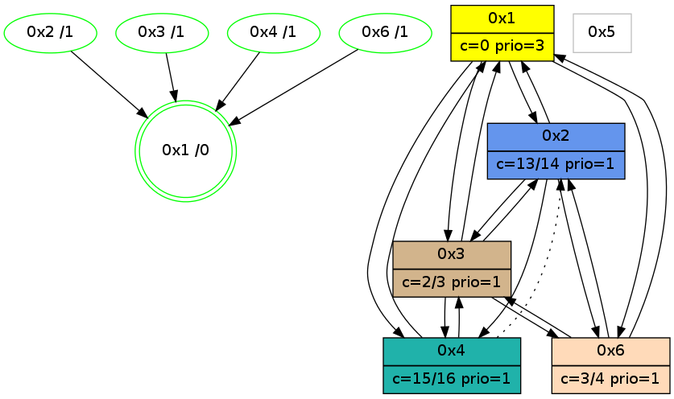

>> << IDX [start] -100 -25 -5 +0 +5 +25 +100 [1115.26681018]
 Previous packets
----------------------------------------------------------------------
1110.345729 beacon01(adaf) #0 coord=01,02,05,03,04,06 cycle=432.0ms assoc
-- color-indic=1 64 4e 08
1110.355693 beacon02(adaf) #0 coord=01,02,05,03,04,06 cycle=432.0ms assoc 64 1f f7
1110.365690 beacon05(adaf) #0 coord=01,02,05,03,04,06 cycle=432.0ms assoc 64 b9 dd
1110.375690 beacon03(adaf) #0 coord=01,02,05,03,04,06 cycle=432.0ms assoc 64 25 f9
1110.385690 beacon04(adaf) #0 coord=01,02,05,03,04,06 cycle=432.0ms assoc 64 83 d3
1110.395691 beacon06(adaf) #0 coord=01,02,05,03,04,06 cycle=432.0ms assoc 64 f7 cf
1110.407397 [Hello(3): seq=916 sym=6,2,1 sysInfo=hasWarning stat=6:3,3,8,5/2:4,7,4,0/1:4,6,9,1]
1110.409827 [Hello(1): seq=818 sym=2,4,6,3 sysInfo=hasWarning,coloring-mode-on,ColoringModeRequestCalled stat=2:6,1,9,0/4:10,10,10,2/6:9,0,4,1/3:8,9,6,2]
1110.411689 [Color(6) seq=280 @0:0 prio=1 >1.@3 >>1.@6 c=0,d;7,c,e,f]
1110.413717 [Color(2) seq=302 @0:0 color=13 prio=1 c=0,7,c,e,f;1,4,6,8,9,b]
1110.417274 [Color(1) seq=344 @0:0 color=0 prio=3 c=c,d,f;7,e]
----------------------------------------------------------------------
1110.837836 beacon01(adaf) #0 coord=01,02,05,03,04,06 cycle=432.0ms assoc
-- color-indic=1 64 8a 67
1110.847797 beacon02(adaf) #0 coord=01,02,05,03,04,06 cycle=432.0ms assoc 64 db 98
1110.857797 beacon05(adaf) #0 coord=01,02,05,03,04,06 cycle=432.0ms assoc 64 7d b2
1110.867798 beacon03(adaf) #0 coord=01,02,05,03,04,06 cycle=432.0ms assoc 64 e1 96
1110.877797 beacon04(adaf) #0 coord=01,02,05,03,04,06 cycle=432.0ms assoc 64 47 bc
1110.887798 beacon06(adaf) #0 coord=01,02,05,03,04,06 cycle=432.0ms assoc 64 33 a0
1110.899535 [Hello(2): seq=1404 sym=3,6,1 sysInfo=hasWarning stat=3:2,15,10,2/6:8,0,5,1/1:15,1,11,0]
1110.902052 [Color(3) seq=213 @0:0 color=2 prio=1 >1.@6 >>1.@6 c=0,d,f;7,c,e]
1110.904089 [Hello(4): seq=918 sym=1 asym=2,3 sysInfo=hasWarning stat=1:2,3,14,0/2:2,13,2,1/3:8,15,3,3]
1110.907806 [Color(4) seq=199 @0:0 color=15 prio=1 >1.@6 >>1.@3 c=0,7,c;1,4,6,8,9,b,d,e]
----------------------------------------------------------------------
1111.329944 beacon01(adaf) #0 coord=01,02,05,03,04,06 cycle=432.0ms assoc
-- color-indic=1 64 c6 d7
1111.339904 beacon02(adaf) #0 coord=01,02,05,03,04,06 cycle=432.0ms assoc 64 97 28
1111.349905 beacon05(adaf) #0 coord=01,02,05,03,04,06 cycle=432.0ms assoc 64 31 02
1111.359906 beacon03(adaf) #0 coord=01,02,05,03,04,06 cycle=432.0ms assoc 64 ad 26
1111.369905 beacon04(adaf) #0 coord=01,02,05,03,04,06 cycle=432.0ms assoc 64 0b 0c
1111.379906 beacon06(adaf) #0 coord=01,02,05,03,04,06 cycle=432.0ms assoc 64 7f 10
1111.391921 [Hello(3): seq=917 sym=6,2,1,4 sysInfo=hasWarning stat=6:4,4,8,5/2:4,8,4,0/1:5,7,9,1/4:0,1,0,0]
1111.394602 [TreeStatus(2)-.->1 #0.191 new-neigh,tree-change,inconsistent-stability,stable child=1]
1111.396675 [Hello(1): seq=819 sym=2,4,6,3 sysInfo=hasWarning,coloring-mode-on,ColoringModeRequestCalled stat=2:7,1,9,0/4:11,11,10,2/6:9,0,4,1/3:8,10,6,2]
1111.398805 [Color(2) seq=303 @0:0 color=13/14 prio=1 c=0,2,7,c,e,f;1,4,6,8,9,b]
1111.400443 [TreeStatus(3)-.->1 #0.191 new-neigh,tree-change,inconsistent-stability,stable child=1]
1111.402187 [STC(1) #0.192 new-neigh,tree-change,inconsistent-stability,stable,to-color d=0]
1111.405412 [Color(1) seq=345 @0:0 color=0 prio=3 c=c,d,f;7,e]
----------------------------------------------------------------------
1111.822051 beacon01(adaf) #0 coord=01,02,05,03,04,06 cycle=432.0ms assoc
-- color-indic=1 64 02 b8
1111.832013 beacon02(adaf) #0 coord=01,02,05,03,04,06 cycle=432.0ms assoc 64 53 47
1111.842013 beacon05(adaf) #0 coord=01,02,05,03,04,06 cycle=432.0ms assoc 64 f5 6d
1111.852013 beacon03(adaf) #0 coord=01,02,05,03,04,06 cycle=432.0ms assoc 64 69 49
1111.862013 beacon04(adaf) #0 coord=01,02,05,03,04,06 cycle=432.0ms assoc 64 cf 63
1111.872014 beacon06(adaf) #0 coord=01,02,05,03,04,06 cycle=432.0ms assoc 64 bb 7f
1111.884021 [Hello(2): seq=1405 sym=3,6,1,4 sysInfo=hasWarning stat=3:3,0,10,3/6:8,0,5,1/1:15,2,12,0/4:0,1,0,0]
1111.886404 [Hello(4): seq=919 sym=1,3 asym=2 sysInfo=hasWarning stat=1:3,4,15,0/3:9,15,3,4/2:2,14,2,1]
1111.888445 [STC(3)->1 #0.192 new-neigh,tree-change,inconsistent-stability,stable,to-color d=1]
1111.891225 [STC(4)->1 #0.192 new-neigh,tree-change,inconsistent-stability,stable,to-color d=1]
1111.892542 [STC(2)->1 #0.192 new-neigh,tree-change,inconsistent-stability,stable,to-color d=1]
1111.893838 [Color(4) seq=200 @0:0 color=15/16 prio=1 c=0,3,7,c;1,2,4,6,8,9,b,d,e]
1111.895320 [Color(3) seq=214 @0:0 color=2 prio=1 >1.@6 >>1.@6 c=0,d,f;7,c,e]
1111.898544 [STC(6)->1 #0.192 new-neigh,tree-change,inconsistent-stability,stable,to-color d=1]
----------------------------------------------------------------------
1112.314159 beacon01(adaf) #0 coord=01,02,05,03,04,06 cycle=432.0ms assoc
-- color-indic=1 64 7a 15
1112.324122 beacon02(adaf) #0 coord=01,02,05,03,04,06 cycle=432.0ms assoc 64 2b ea
1112.334120 beacon05(adaf) #0 coord=01,02,05,03,04,06 cycle=432.0ms assoc 64 8d c0
1112.344122 beacon03(adaf) #0 coord=01,02,05,03,04,06 cycle=432.0ms assoc 64 11 e4
1112.354121 beacon04(adaf) #0 coord=01,02,05,03,04,06 cycle=432.0ms assoc 64 b7 ce
1112.364124 beacon06(adaf) #0 coord=01,02,05,03,04,06 cycle=432.0ms assoc 64 c3 d2
1112.375885 [Hello(3): seq=918 sym=6,2,1,4 sysInfo=hasWarning stat=6:4,4,9,5/2:4,8,4,0/1:5,8,10,1/4:0,1,0,0]
1112.378563 [Color(2) seq=304 @0:0 color=13/14 prio=1 c=0,2,7,c,e,f;1,3,4,6,8,9,b]
1112.380044 [Color(6) seq=282 @0:0 color=3/4 prio=1 c=0,2,d;7,c,e,f]
1112.381702 [Hello(1): seq=820 sym=2,4,6,3 sysInfo=hasWarning,coloring-mode-on,ColoringModeRequestCalled stat=2:7,1,10,0/4:12,12,11,2/6:9,0,5,1/3:8,11,7,2]
1112.384541 [Color(1) seq=346 @0:0 color=0 prio=3 c=c,d,f;3,7,e]
----------------------------------------------------------------------
1112.806269 beacon01(adaf) #0 coord=01,02,05,03,04,06 cycle=432.0ms assoc
-- color-indic=1 64 be 7a
1112.816232 beacon02(adaf) #0 coord=01,02,05,03,04,06 cycle=432.0ms assoc 64 ef 85
1112.826231 beacon05(adaf) #0 coord=01,02,05,03,04,06 cycle=432.0ms assoc 64 49 af
1112.836231 beacon03(adaf) #0 coord=01,02,05,03,04,06 cycle=432.0ms assoc 64 d5 8b
1112.846231 beacon04(adaf) #0 coord=01,02,05,03,04,06 cycle=432.0ms assoc 64 73 a1
1112.856231 beacon06(adaf) #0 coord=01,02,05,03,04,06 cycle=432.0ms assoc 64 07 bd
1112.867990 [Hello(2): seq=1406 sym=3,6,1,4 sysInfo=hasWarning stat=3:4,1,10,3/6:8,1,6,1/1:0,3,12,0/4:0,2,0,0]
1112.870750 [Color(3) seq=215 @0:0 color=2/3 prio=1 c=0,3,d,f;7,c,e]
1112.872497 [Hello(4): seq=920 sym=1,3 asym=2 sysInfo=hasWarning stat=1:4,5,15,0/3:10,0,3,4/2:2,15,2,1]
1112.876214 [Color(4) seq=201 @0:0 color=15/16 prio=1 c=0,3,7,c;1,2,4,6,8,9,b,d,e]
----------------------------------------------------------------------
1113.298377 beacon01(adaf) #0 coord=01,02,05,03,04,06 cycle=432.0ms assoc
-- color-indic=1 64 f2 ca
1113.308338 beacon02(adaf) #0 coord=01,02,05,03,04,06 cycle=432.0ms assoc 64 a3 35
1113.318338 beacon05(adaf) #0 coord=01,02,05,03,04,06 cycle=432.0ms assoc 64 05 1f
1113.328338 beacon03(adaf) #0 coord=01,02,05,03,04,06 cycle=432.0ms assoc 64 99 3b
1113.338339 beacon04(adaf) #0 coord=01,02,05,03,04,06 cycle=432.0ms assoc 64 3f 11
1113.348338 beacon06(adaf) #0 coord=01,02,05,03,04,06 cycle=432.0ms assoc 64 4b 0d
1113.360105 [Hello(3): seq=919 sym=6,2,1,4 sysInfo=hasWarning stat=6:5,5,9,5/2:4,9,4,0/1:6,9,10,1/4:1,2,0,0]
1113.361948 [Hello(1): seq=821 sym=2,4,6,3 sysInfo=hasWarning,coloring-mode-on,ColoringModeRequestCalled stat=2:8,1,10,0/4:13,13,11,2/6:9,0,5,1/3:8,12,7,2]
1113.364349 [Color(6) seq=283 @0:0 color=3/4 prio=1 c=0,2,d;7,c,e,f]
1113.366440 [Color(2) seq=305 @0:0 color=13/14 prio=1 c=0,2,3,7,c,e,f;1,4,6,8,9,b]
1113.368401 [Color(1) seq=347 @0:0 color=0 prio=3 c=c,d,f;3,7,e]
----------------------------------------------------------------------
1113.790484 beacon01(adaf) #0 coord=01,02,05,03,04,06 cycle=432.0ms assoc
-- color-indic=1 64 36 a5
1113.800445 beacon02(adaf) #0 coord=01,02,05,03,04,06 cycle=432.0ms assoc 64 67 5a
1113.810445 beacon05(adaf) #0 coord=01,02,05,03,04,06 cycle=432.0ms assoc 64 c1 70
1113.820445 beacon03(adaf) #0 coord=01,02,05,03,04,06 cycle=432.0ms assoc 64 5d 54
1113.830446 beacon04(adaf) #0 coord=01,02,05,03,04,06 cycle=432.0ms assoc 64 fb 7e
1113.840446 beacon06(adaf) #0 coord=01,02,05,03,04,06 cycle=432.0ms assoc 64 8f 62
1113.852212 [Hello(2): seq=1407 sym=3,6,1,4 sysInfo=hasWarning stat=3:5,2,10,3/6:8,1,6,1/1:0,4,12,0/4:1,3,0,0]
1113.856712 [Hello(4): seq=921 sym=1,3 asym=2 sysInfo=hasWarning stat=1:5,6,15,0/3:11,0,3,4/2:2,0,2,1]
1113.859466 [STC(1) #0.193 new-neigh,tree-change,inconsistent-stability,stable,to-color d=0]
1113.864096 [Color(4) seq=202 @0:0 color=15/16 prio=1 c=0,3,7,c;1,2,4,6,8,9,b,d,e]
----------------------------------------------------------------------
1114.282594 beacon01(adaf) #0 coord=01,02,05,03,04,06 cycle=432.0ms assoc
-- color-indic=1 64 7b a2
1114.292556 beacon02(adaf) #0 coord=01,02,05,03,04,06 cycle=432.0ms assoc 64 2a 5d
1114.302556 beacon05(adaf) #0 coord=01,02,05,03,04,06 cycle=432.0ms assoc 64 8c 77
1114.312556 beacon03(adaf) #0 coord=01,02,05,03,04,06 cycle=432.0ms assoc 64 10 53
1114.322556 beacon04(adaf) #0 coord=01,02,05,03,04,06 cycle=432.0ms assoc 64 b6 79
1114.332557 beacon06(adaf) #0 coord=01,02,05,03,04,06 cycle=432.0ms assoc 64 c2 65
1114.344562 [Hello(3): seq=920 sym=6,2,1,4 sysInfo=hasWarning stat=6:5,6,9,5/2:4,10,4,0/1:7,10,11,1/4:1,3,0,0]
1114.346475 [Hello(1): seq=822 sym=2,4,6,3 sysInfo=hasWarning,coloring-mode-on,ColoringModeRequestCalled stat=2:8,1,10,0/4:13,14,11,2/6:9,0,5,1/3:8,12,7,2]
1114.348839 [STC(6)->1 #0.193 new-neigh,tree-change,inconsistent-stability,stable,to-color d=1]
1114.350886 [STC(2)->1 #0.193 new-neigh,tree-change,inconsistent-stability,stable,to-color d=1]
1114.353083 [STC(3)->1 #0.193 new-neigh,tree-change,inconsistent-stability,stable,to-color d=1]
1114.355714 [Color(6) seq=284 @0:0 color=3/4 prio=1 c=0,2,d;7,c,e,f]
1114.357774 [Color(2) seq=306 @0:0 color=13/14 prio=1 c=0,2,3,7,c,e,f;1,4,6,8,9,b]
1114.362039 [Color(1) seq=348 @0:0 color=0 prio=3 c=c,d,f;3,7,e]
----------------------------------------------------------------------
1114.774702 beacon01(adaf) #0 coord=01,02,05,03,04,06 cycle=432.0ms assoc
-- color-indic=1 64 bf cd
1114.784663 beacon02(adaf) #0 coord=01,02,05,03,04,06 cycle=432.0ms assoc 64 ee 32
1114.794665 beacon05(adaf) #0 coord=01,02,05,03,04,06 cycle=432.0ms assoc 64 48 18
1114.804663 beacon03(adaf) #0 coord=01,02,05,03,04,06 cycle=432.0ms assoc 64 d4 3c
1114.814665 beacon04(adaf) #0 coord=01,02,05,03,04,06 cycle=432.0ms assoc 64 72 16
1114.824665 beacon06(adaf) #0 coord=01,02,05,03,04,06 cycle=432.0ms assoc 64 06 0a
1114.836412 [Hello(2): seq=1408 sym=3,6,1,4 sysInfo=hasWarning stat=3:6,3,10,3/6:8,1,6,1/1:0,5,13,0/4:1,4,0,0]
1114.840916 [Hello(4): seq=922 sym=1,3 asym=2 sysInfo=hasWarning stat=1:6,7,15,0/3:12,0,4,4/2:2,1,3,1]
1114.844633 [Color(4) seq=203 @0:0 color=15/16 prio=1 c=0,3,7,c;1,2,4,6,8,9,b,d,e]